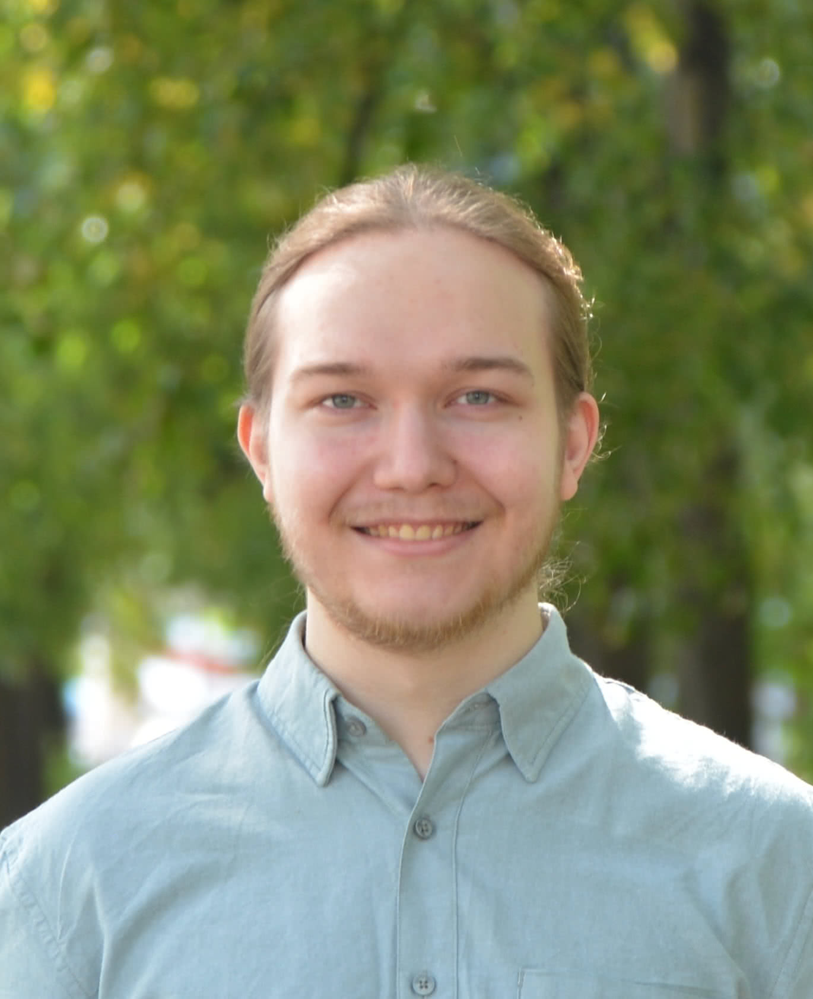

|
Vladimir Malinovskii
I am an ML Resident at Yandex Research, specializing in quantization algorithms. I am pursuing a Master's degree in Computer Science at the Higher School of Economics (HSE), through a joint program with the Yandex School of Data Analysis.
Previously, I was a Software Engineer in the Infrastructure team at Yandex, contributing to the development and maintenance of high-scale deployment systems.
I hold a Bachelor of Science in Applied Mathematics and Physics with a minor in Data Analysis from the Moscow Institute of Physics and Technology (MIPT).
Email /
CV /
Scholar /
Github /
Linkedin
|

|
PV‑Tuning: Beyond Straight‑Through Estimation for Extreme LLM Compression
Vladimir Malinovskii*, Denis Mazur*, Ivan Ilin*, Denis Kuznedelev, Konstantin Burlachenko, Kai Yi, Dan Alistarh, and Peter Richtarik
NIPS, 2024, Oral | Arxiv | Code
|
Pushing the Limits of Large Language Model Quantization via the Linearity Theorem
Vladimir Malinovskii, Andrei Panferov, Ivan Ilin, Han Guo, Peter Richtárik, Dan Alistarh
NAACL, 2025 | Arxiv
|
Cache Me If You Must: Adaptive Key-Value Quantization for Large Language Models
Alina Shutova, Vladimir Malinovskii, Vage Egiazarian, Denis Kuznedelev, Denis Mazur, Nikita Surkov, Ivan Ermakov, Dan Alistarh
Arxiv, 2025 | Arxiv
|
|
{kind=link}